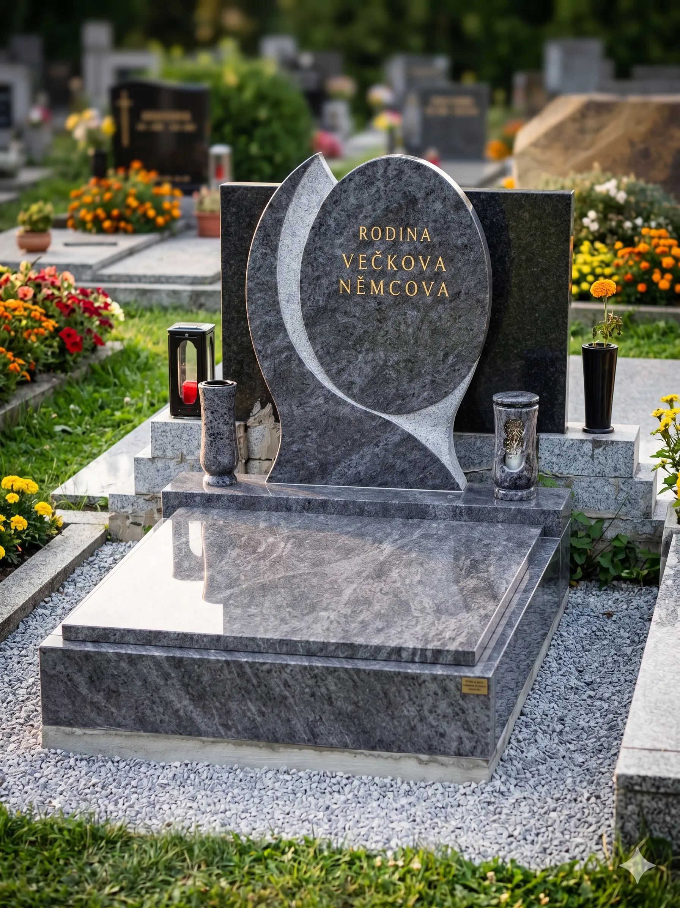
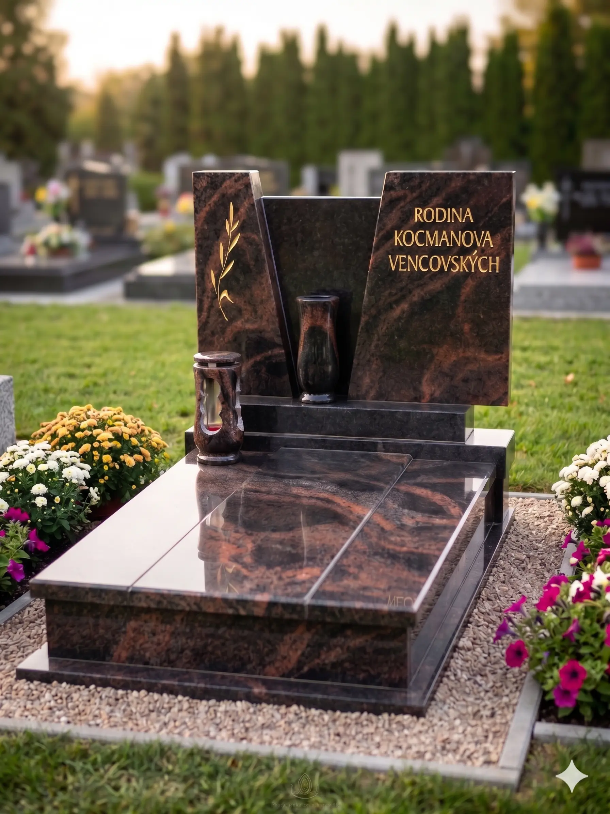
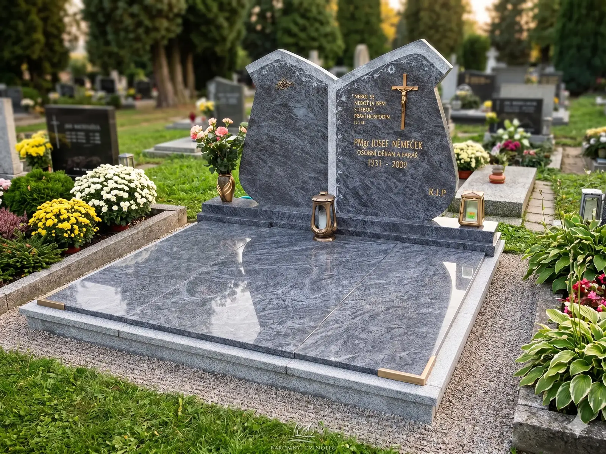

Důstojná a věčná památka z přírodního kamene, vytvořená s pokorou k řemeslu.
Vyrábíme pomníky a náhrobky z přírodního kamene pro věčnou a důstojnou památku na zesnulé.
Provádíme individuální výrobu i odborné renovace s ohledem na Vaše představy i finanční možnosti. Sídlíme na Vysočině, ale montáže zajišťujeme po celé České republice v mnoha barevných odstínech žuly.
Jako jedna z mála firem se věnujeme i terasovým hrobům. Kompletní servis od základu až po likvidaci starých dílů Vám ušetří čas i starosti.
Zkonzultujeme Vaši představu a navrhneme technické řešení.
Precizně zpracujeme vybraný kámen v našich dílnách.
Zajistíme bezpečnou přepravu na jakýkoliv hřbitov v ČR.
Odborně usadíme a zajistíme jednání se správou hřbitova.

Slouží k ukládání uren s popelem. Skládají se z žulových rámů, krycí desky a pomníku. Menší rozměry umožňují umístění i v omezeném prostoru.

Rozměry cca 110x250 cm pro ukládání rakve. Vyžadují bytelný betonový základ. Realizujeme kompletně včetně výkopových prací a základů.

Pro ukládání dvou rakví vedle sebe, rozměr cca 200x250 cm. Skládá se z více krycích desek (3-5 dílů). Důraz na statiku a přesnost usazení.
Teraso (míchaná kamenná drť) představuje tradiční a cenově dostupnější variantu k žule. Jako jedna z mála firem v regionu se stále věnujeme výrobě a precizním opravám těchto hrobů.
Chtěli byste důstojnou památku na zesnulého zvířecího mazlíčka? Vyrobíme pro Vás citlivě zpracovaný pomníček nebo náhrobní desku přesně podle Vašeho přání.
Svěřte svůj projekt do rukou profesionálů. Kontaktujte nás a my pro Vás rádi připravíme nezávaznou kalkulaci na míru.